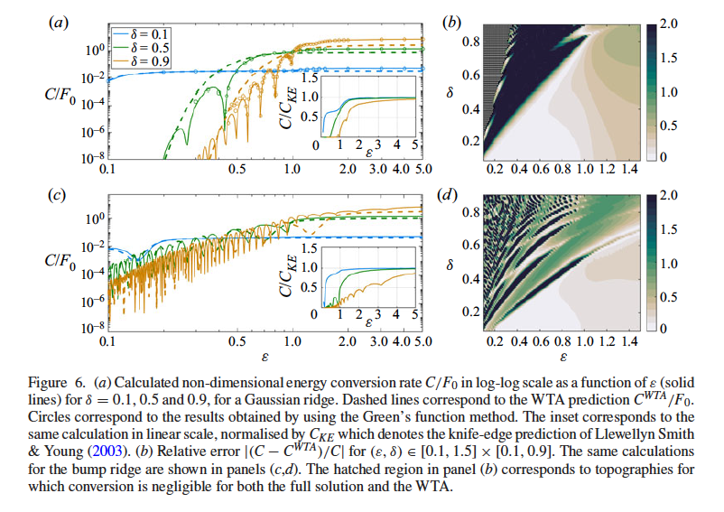
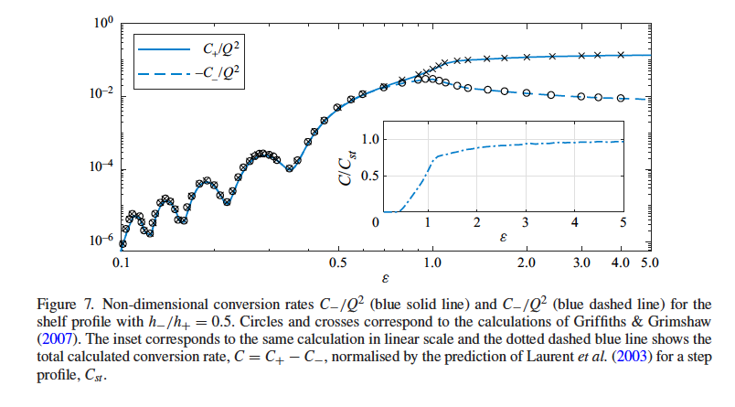
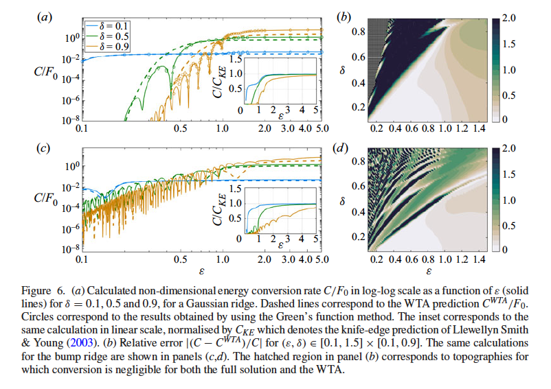
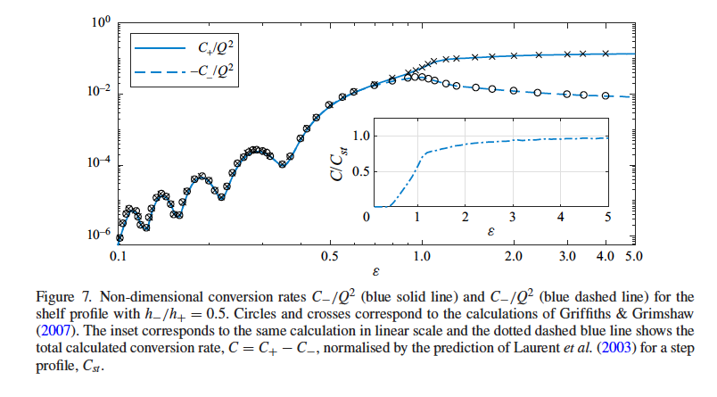

publications
Preprints
-
Ch. Papoutsellis, and G. Athanassoulis (2017), A new efficient Hamiltonian approach to the nonlinear water-wave problem over arbitrary bathymetry
A new Hamiltonian formulation for the fully nonlinear water-wave problem over variable bathymetry is derived, using an exact, vertical series expansion of the velocity potential, in conjunction with Luke’s variational principle. The obtained Euler-Lagrange equations contain infinite series and can rederive various existing model equations upon truncation. In this paper, the infinite series are summed up, resulting in two exact Hamiltonian equations for the free-surface elevation and the free-surface potential, coupled with a time-independent horizontal system of equations. The Dirichlet to Neumann operator is given by a simple and versatile representation, which is valid for any smooth fluid domain, not necessarily periodic in the horizontal direction(s), without limitations on the steepness and deformation of the seabed and the free surface. An efficient numerical scheme is presented and applied to the case of one horizontal dimension, establishing the ability of the new formulation to simulate strongly nonlinear and dispersive wave-bottom interactions by comparison with experimental measurements.
@preprint{papoutsellis2017new, title = {A new efficient Hamiltonian approach to the nonlinear water-wave problem over arbitrary bathymetry}, author = {Papoutsellis, Ch. and Athanassoulis, G.}, year = {2017}, eprint = {1704.03276}, archiveprefix = {arXiv}, primaryclass = {physics.flu-dyn}, }
Journal papers
-
Ocean Eng.Ch E. Papoutsellis, Y-M. Scolan, and R Hascoët (2024), Capsize criteria in beam seas: Melnikov analysis vs. safe basin erosion Ocean Engineering 306 118024
We study the problem of capsizing of a rolling ship in harmonic and random beam seas, by means of the Melnikov method and safe basin calculations. In the random excitation case, we consider an integro-differential Cummins-type model equation that takes into account the hydrodynamic memory. The non-linear restoring moment is modeled by a high-order polynomial and the Melnikov criteria are evaluated numerically. We also examine a variant of the classical Melnikov method in which the damping terms are incorporated into the unperturbed system and the perturbation takes a modified form. We compare the theoretical predictions with direct (Monte-Carlo) simulations of the safe basins for two existing ships. In the random excitation case, we quantify the erosion by means of a mean integrity index. For weak damping, the classical and modified Melnikov curves coincide and are in good agreement with the onset of the safe basin erosion. As damping increases the Melnikov curves become less and less conservative with respect to the onset of erosion. Finally, the potential of the Melnikov method to provide a ship classification tool is discussed.
@article{papoutsellis_Scolan_Hasc_2024, title = {Capsize criteria in beam seas: Melnikov analysis vs. safe basin erosion}, volume = {306}, journal = {Ocean Engineering}, publisher = {Elsevier}, author = {Papoutsellis, Ch E. and Scolan, Y-M. and Hasco\"et, R}, year = {2024}, pages = {118024}, } -
J. Fluid Mech.Ch E. Papoutsellis, M J. Mercier, and N Grisouard (2023), Internal tide generation from non-uniform barotropic body forcing Journal of Fluid Mechanics 964 A20
 



We model linear, inviscid, internal tides generated by the interaction of a barotropic tide with one-dimensional topography. Starting from the body-forcing formulation of the hydrodynamic problem, we derive a coupled-mode system (CMS) using a local eigenfunction expansion of the stream function. For infinitesimal topography, we solve this CMS analytically, recovering the classical weak topography approximation (WTA) formula for the barotropic-to-baroclinic energy conversion rate. For arbitrary topographies, we solve this CMS numerically. The CMS enjoys faster convergence with respect to existing modal solutions and can be applied in the subcritical and supercritical regimes for both ridges and shelf profiles. We show that the non-uniform barotropic tide affects the baroclinic field locally over topographies with large slopes and we study the dependence of the radiated energy conversion rate on the criticality. We show that non-radiating or weakly radiating topographies are common in the subcritical regime. We also assess the region of validity of the WTA approximation for the commonly used Gaussian ridge and a compactly supported bump ridge studied here for the first time. Finally, we provide numerical evidence showing that in the strongly supercritical regime, the energy conversion rate for a ridge (respectively shelf) approaches the value obtained by the knife-edge (respectively step) topography.
@article{papoutsellis_mercier_grisouard_2023, title = {Internal tide generation from non-uniform barotropic body forcing}, volume = {964}, journal = {Journal of Fluid Mechanics}, publisher = {Cambridge University Press}, author = {Papoutsellis, Ch E. and Mercier, M J. and Grisouard, N}, year = {2023}, pages = {A20}, } -
Nat. Hazards Earth Syst. Sci.P. Henry, M. S. Özeren, N. Yakupoğlu, Z. Çakir, and 10 more authors (2022), Mass flows, turbidity currents and other hydrodynamic consequences of small and moderate earthquakes in the Sea of Marmara Natural Hazards and Earth System Sciences 22 (12) 3939–3956
Earthquake-induced submarine slope destabilization is known to cause mass wasting and turbidity currents, but the hydrodynamic processes associated with these events remain poorly understood. Instrumental records are rare, and this notably limits our ability to interpret marine paleoseismological sedimentary records. An instrumented frame comprising a pressure recorder and a Doppler recording current meter deployed at the seafloor in the Sea of Marmara Central Basin recorded the consequences of a Mw 5.8 earthquake occurring on 26 September 2019 and of a Mw 4.7 foreshock 2 d before. The smaller event caused sediment resuspension and weak current (<4 cm s−1) in the water column. The larger event triggered a complex response involving a debris flow and turbidity currents with variable velocities and orientations, which may have resulted from multiple slope failures. A long delay of 10 h is observed between the earthquake and the passing of the strongest turbidity current. The distance traveled by the sediment particles during the event is estimated to have extended over several kilometers, which could account for a local deposit on a sediment fan at the outlet of a canyon (where the instrument was located), but the sedimentation event did not likely cover the whole basin floor. We show that after a moderate earthquake, delayed turbidity current initiation may occur, possibly by ignition of a cloud of resuspended sediment.
@article{nhess-22-3939-2022, author = {Henry, P. and \"Ozeren, M. S. and Yakupoğlu, N. and \c{C}akir, Z. and de Saint-L\'eger, E. and Desprez de G\'esincourt, O. and Tengberg, A. and Chevalier, C. and Papoutsellis, C. and Postacıoğlu, N. and Dogan, U. and Karabulut, H. and U\c{c}arku\c{s}, G. and \c{C}ağatay, M. N.}, title = {Mass flows, turbidity currents and other hydrodynamic consequences of small and moderate earthquakes in the Sea of Marmara}, journal = {Natural Hazards and Earth System Sciences}, volume = {22}, year = {2022}, number = {12}, pages = {3939--3956}, } -
G. A Athanassoulis, C Mavroeidis, P Koutsogiannakis, and Ch. E Papoutsellis (2019), A numerical study of the run-up and the force exerted on a vertical wall by a solitary wave propagating over two tandem trenches Journal of Ocean Engineering and Marine Energy 5 311-331
The propagation and transformation of water waves over varying bathymetries is a subject of fundamental interest to ocean, coastal and harbor engineers. The specific bathymetry considered in this paper consists of one or two, naturally formed or man-made, trenches. The problem we focus on is the transformation of an incoming solitary wave by the trench(es), and the impact of the resulting wave system on a vertical wall located after the trench(es). The maximum run-up and the maximum force exerted on the wall are calculated for various lengths and heights of the trench(es), and are compared with the corresponding quantities in the absence of them. The calculations have been performed using the fully nonlinear water-wave equations, in the form of the Hamiltonian coupled-mode theory, recently developed by Papoutsellis et al. (Eur J Mech B/Fluids 72:199–224, 2018). Comparisons of the calculated free-surface elevation with existing experimental results indicate that the effect of the vortical flow, inevitably developed within and near the trench(es) but not captured by any potential theory, is not important concerning the frontal wave flow regime. This suggests that the predictions of the run-up and the force on the wall by means of nonlinear potential theory are expected to be nearly realistic. The main conclusion of our investigation is that the presence of two tandem trenches in front of the wall may reduce the run-up from (about) 20 to 45% and the force from 15 to 38%, depending on the trench dimensions and the wave amplitude. The percentage reduction is greater for higher waves. The presence of only one trench leads to reductions 1.4–1.7 times smaller.
@article{MavPapoutsellis2019, title = {A numerical study of the run-up and the force exerted on a vertical wall by a solitary wave propagating over two tandem trenches}, journal = {Journal of Ocean Engineering and Marine Energy}, volume = {5}, pages = {311-331}, year = {2019}, author = {Athanassoulis, G. A and Mavroeidis, C and Koutsogiannakis, P and Papoutsellis, Ch. E} } -
J. Eng. Math.T. Papathanasiou, Ch. E Papoutsellis, and G. A Athanassoulis (2019), Semi-explicit solutions to the water-wave dispersion relation and their role in the non-linear Hamiltonian coupled-mode theory Journal of Engineering Mathematics 114 87–114
The Hamiltonian coupled-mode theory (HCMT), recently derived by Athanassoulis and Papoutsellis [Proceeding of 34th International Conference on Ocean Offshore Arctic Engineering, ASME, St. John’s, Newfoundland, Canada, 2015], provides an efficient new approach for solving fully non-linear water-wave problems over arbitrary bathymetry. This theory exactly transforms the free-boundary problem to a fixed-boundary one, with space and time-varying coefficients. In calculating these coefficients, heavy use is made of the roots of a local, water-wave dispersion relation with varying parameters, which have to be calculated at every horizontal position and every time instant. Thus, fast and accurate calculation of these roots, valid for all possible values of the varying parameter, are of fundamental importance for the efficient implementation of HCMT. In this paper, new, semi-explicit and highly accurate root-finding formulae are derived, especially for the roots corresponding to evanescent modes. The derivation is based on the successive application of a Picard-type iteration and the Householders root-finding method. Explicit approximate formulae of very good accuracy are obtained, and machine-accurate determination of the required roots is easily achieved by no more than three iterations, using the explicit forms as initial values. Exploiting this procedure in the HCMT, results in an efficient, dimensionally reduced, numerical solver able to treat fully non-linear water waves over arbitrary bathymetry. Applications to four demanding non-linear problems demonstrate the efficiency and the robustness of the present approach. Specifically, we consider the classical tests of strongly non-linear steady wave propagation and the transformation of regular waves due to trapezoidal and sinusoidal bathymetry. Novel results are also given for the disintegration of a solitary wave due to an abrupt deepening. The derived root-finding formulae can be used with any other multimodal methods as well.
@article{PapPapAth2019, author = {Papathanasiou, T. and Papoutsellis, Ch. E and Athanassoulis, G. A}, title = {Semi-explicit solutions to the water-wave dispersion relation and their role in the non-linear Hamiltonian coupled-mode theory}, journal = {Journal of Engineering Mathematics}, volume = {114}, year = {2019}, pages = {87--114}, } -
B. Simon, Ch. Papoutsellis, M. Benoit, and M. L. Yates (2019), Comparing methods of modeling depth-induced breaking of irregular waves with a fully nonlinear potential flow approach Journal of Ocean Engineering and Marine Energy 5 365-383
The modeling of wave-breaking dissipation in coastal areas is investigated with a fully nonlinear and dispersive wave model. The wave propagation model is based on potential flow theory, which initially assumes non-overturning waves. Including the impacts of wave-breaking dissipation is, however, possible by implementing a wave breaking initiation criterion and dissipation mechanism. Three criteria from the literature, including a geometric, kinematic, and dynamic-type criterion, are tested to determine the optimal criterion predicting the onset of wave breaking. Three wave-breaking energy dissipation methods are also tested: the first two are based on the analogy of a breaking wave with a hydraulic jump, and the third one applies an eddy viscosity dissipative term. Numerical simulations are performed using combinations of the three breaking onset criteria and three dissipation methods. The simulation results are compared to observations from four laboratory experiments of regular and irregular waves breaking over a submerged bar, irregular waves breaking on a beach, and irregular waves breaking over a submerged slope. The different breaking approaches provide similar results after proper calibration. The wave transformation observed in the experiments is reproduced well, with better results for the case of regular waves than irregular waves. Moreover, the wave statistics and wave spectra are predicted well in general, and in particular for regular waves. Some differences are observed for irregular wave cases, in particular in the low-frequency range. This is attributed to incomplete absorption of the long waves in the numerical model. Otherwise, the wave spectra in the range [0.5fp,5fp] are reproduced well before, within, and after the breaking zone for the three irregular wave experiments.
@article{SimonPapoutsellis2019, title = {Comparing methods of modeling depth-induced breaking of irregular waves with a fully nonlinear potential flow approach}, journal = {Journal of Ocean Engineering and Marine Energy}, volume = {5}, pages = {365-383}, year = {2019}, author = {Simon, B. and Papoutsellis, Ch. and Benoit, M. and Yates, M. L.}, keywords = {Wave breaking, Hamiltonian formulation of water waves, Eddy-viscosity, Fully nonlinear water waves} } -
Ch. Papoutsellis, M. L. Yates, B. Simon, and M. Benoit (2019), Modelling of depth-induced wave breaking in a fully nonlinear free-surface potential flow model Coastal Engineering 154 103579
Two methods to treat wave breaking in the framework of the Hamiltonian formulation of free-surface potential flow are presented, tested, and validated. The first is an extension of Kennedy et al. (2000)’s eddy-viscosity approach originally developed for Boussinesq-type wave models. In this approach, an extra term, constructed to conserve the horizontal momentum for waves propagating over a flat bottom, is added in the dynamic free-surface condition. In the second method, a pressure distribution is introduced at the free surface that dissipates wave energy by analogy to a hydraulic jump (Guignard and Grilli, 2001). The modified Hamiltonian systems are implemented using the Hamiltonian Coupled-Mode Theory, in which the velocity potential is represented by a rapidly convergent vertical series expansion. Wave energy dissipation and conservation of horizontal momentum are verified numerically. Comparisons with experimental measurements are presented for the propagation of a breaking dispersive shock wave following a dam break, and then incident regular waves breaking on a mildly sloping beach and over a submerged bar.
@article{PTSB, title = {Modelling of depth-induced wave breaking in a fully nonlinear free-surface potential flow model}, journal = {Coastal Engineering}, volume = {154}, pages = {103579}, year = {2019}, issn = {0378-3839}, hal = {hal-02332720}, author = {Papoutsellis, Ch. and Yates, M. L. and Simon, B. and Benoit, M.}, keywords = {Wave breaking, Hamiltonian formulation of water waves, Eddy-viscosity, Fully nonlinear water waves} } -
Eur. J. Mech. B FluidsCh. Papoutsellis, A. Charalampopoulos, and G. Athanassoulis (2018), Implementation of a fully nonlinear Hamiltonian Coupled-Mode Theory, and application to solitary wave problems over bathymetry European Journal of Mechanics - B/Fluids 72 199-224
This paper deals with the implementation of a new, efficient, non-perturbative, Hamiltonian coupled-mode theory (HCMT) for the fully nonlinear, potential flow (NLPF) model of water waves over smooth, single-valued, but otherwise arbitrary bathymetry Papoutsellis and Athanassoulis (2017). Applications considered herein concern the interaction of solitary waves with bottom topographies and vertical walls both in two- and three-dimensional environments. The essential novelty of HCMT is a new representation of the Dirichlet-to-Neumann operator, which is needed to close the Hamiltonian evolution equations. This new representation emerges from the treatment of the substrate kinematical problem by means of exact semi-separation of variables in the instantaneous, irregular, fluid domain, established recently by Athanassoulis and Papoutsellis (2017). The HCMT ensures an efficient dimensional reduction of the exact NLFP, being able to treat a variable bathymetry as simply as the flat-bottom case, without domain transformation. A key point for the efficient implementation of the method is the fast and accurate evaluation of the space–time varying coefficients appearing in some of its equations. In this paper, all varying coefficients are calculated analytically, resulting in a refined version of the theory, characterized by improved accuracy at significantly reduced computational time. This improved version of HCMT is first validated against existing experimental results and other computations, and subsequently applied to new solitary wave-bottom interaction problems. The latter include: (i) the investigation of a new type of “Bragg scattering” effect, appearing when a solitary wave propagates over a seabed with a sinusoidal patch, and (ii) the disintegration, focusing and reflection of a solitary wave moving over a three-dimensional bathymetry consisting of parallel banks and troughs, and impinging on a vertical wall.
@article{PAPOUTSELLIS2018199, author = {Papoutsellis, Ch. and Charalampopoulos, A. and Athanassoulis, G.}, title = {Implementation of a fully nonlinear Hamiltonian Coupled-Mode Theory, and application to solitary wave problems over bathymetry}, journal = {European Journal of Mechanics - B/Fluids}, volume = {72}, pages = {199-224}, year = {2018}, issn = {0997-7546}, keywords = {Variational formulation, Nonlinear water waves, Wave-bottom interaction, Semi-separation of variables, Solitary wave, Wave transformation by bathymetry} } -
G. Athanassoulis, K. Belibassakis, and Ch. Papoutsellis (2017), An exact Hamiltonian coupled-mode system with application to extreme design waves over variable bathymetry Journal of Ocean Engineering and Marine Energy 3 373-383
A novel, exact, Hamiltonian system of two nonlinear evolution equations, coupled with a time-independent system of horizontal differential equations providing the Dirichlet-to-Neumann operator for any bathymetry, is applied to the study of the evolution of wave trains in finite depth, aiming at the identification of nonlinear high waves in finite depth, and over a sloping bottom. The vertical structure of the wave field is exactly represented up to the instantaneous free surface, by means of an appropriately constructed, rapidly convergent, local vertical series expansion of the wave potential. This Hamiltonian system is used for studying the fully nonlinear refocusing of transient wave groups, obtained by linear backpropagation of high-amplitude wave trains constructed by the theory of quasi-determinism. The results presented give a first quantification of the effects of sloping bottom and of spectral bandwidth on rogue-wave dynamics and kinematics, in finite depth..
@article{AthBelPap2017, title = {An exact Hamiltonian coupled-mode system with application to extreme design waves over variable bathymetry}, journal = {Journal of Ocean Engineering and Marine Energy}, volume = {3}, pages = {373-383}, year = {2017}, author = {Athanassoulis, G. and Belibassakis, K. and Papoutsellis, Ch.}, keywords = {Wave breaking, Hamiltonian formulation of water waves, Eddy-viscosity, Fully nonlinear water waves} } -
Proc. R. Soc. AG. Athanassoulis, and Ch. Papoutsellis (2017), Exact semi-separation of variables in waveguides with non-planar boundaries Proceedings of the Royal Society A: Mathematical, Physical and Engineering Sciences. 473 (2201) 20170017
Series expansions of unknown fields in elongated waveguides are commonly used in acoustics, optics, geophysics, water waves and other applications, in the context of coupled-mode theories (CMTs). The transverse functions Zn are determined by solving local Sturm–Liouville problems (reference waveguides). In most cases, the boundary conditions assigned to Zn cannot be compatible with the physical boundary conditions of Φ, leading to slowly convergent series, and rendering CMTs mild-slope approximations. In the present paper, the heuristic approach introduced in Athanassoulis & Belibassakis (Athanassoulis & Belibassakis 1999 J. Fluid Mech. 389, 275–301) is generalized and justified. It is proved that an appropriately enhanced series expansion becomes an exact, rapidly convergent representation of the field Φ, valid for any smooth, non-planar boundaries and any smooth enough Φ. This series expansion can be differentiated termwise everywhere in the domain, including the boundaries, implementing an exact semi-separation of variables for non-separable domains. The efficiency of the method is illustrated by solving a boundary value problem for the Laplace equation, and computing the corresponding Dirichlet-to-Neumann operator, involved in Hamiltonian equations for nonlinear water waves. The present method provides accurate results with only a few modes for quite general domains. Extensions to general waveguides are also discussed.
@article{AthPap2017, author = {Athanassoulis, G. and Papoutsellis, Ch.}, title = {Exact semi-separation of variables in waveguides with non-planar boundaries}, journal = {Proceedings of the Royal Society A: Mathematical, Physical and Engineering Sciences.}, volume = {473}, number = {2201}, pages = {20170017}, year = {2017}, } -
Procedia Comput. Sci.Ch E. Papoutsellis (2015), Numerical Simulation of Non-linear Water Waves over Variable Bathymetry Procedia Computer Science 66 174-183
We present a numerical method for the computation of surface gravity waves in the presence of variable bathymetry. The evolution is described by an alternative form of the usual Hamiltonian system where the substrate boundary value problem for the potential gives its place to an infinite system of second order partial differential equations on horizontal fields with appropriate boundary conditions and a linear algebraic constraint. We employ the finite difference method to solve this time-independent problem and the classic Runge-Kutta method for the time-integration of the evolution equations. Special care is taken for the consistent wave generation and absorption at the lateral boundaries of a reasonably sized computational domain. Simulations of non-linear waves in the presence of undulated bottoms (Bragg reflection) are presented and validated against experimental measurements.
@article{PAPOUTSELLIS2015174, title = {Numerical Simulation of Non-linear Water Waves over Variable Bathymetry}, journal = {Procedia Computer Science}, volume = {66}, pages = {174-183}, year = {2015}, note = {4th International Young Scientist Conference on Computational Science}, issn = {1877-0509}, author = {Papoutsellis, Ch E.}, keywords = {Hamiltonian water waves, vertical basis functions, variable bathymetry, numerical wave generation and absorption, Bragg scattering} }
Peer reviewed conference proceedings
-
Gerassimos A. Athanassoulis, and Christos E. Papoutsellis (2015), Nonlinear irrotational water waves over variable bathymetry. The Hamiltonian approach with a new efficient representation of the dirichlet to neumann operator In 2015 Days on Diffraction (DD) 1-7
A new Hamiltonian formulation for the non-linear water-wave problem over variable bathymetry is presented. It consists of two evolution equations closed by a time-independent, coupled-mode system of horizontal second order linear partial differential equations. The numerical solution of the latter system shows very good accuracy and convergence properties for domains with very steep boundaries. The efficiency of this formulation for solving the nonlinear water wave problem is demonstrated by comparisons of computations against the case of the classical Beji-Battjes experiment, where non-linearity and dispersion are significant.
@inproceedings{7354825, author = {Athanassoulis, Gerassimos A. and Papoutsellis, Christos E.}, booktitle = {2015 Days on Diffraction (DD)}, title = {Nonlinear irrotational water waves over variable bathymetry. The Hamiltonian approach with a new efficient representation of the dirichlet to neumann operator}, year = {2015}, pages = {1-7}, } -
G. Athanassoulis, and Ch. Papoutsellis (2015), New Form of the Hamiltonian Equations for the Nonlinear Water-Wave Problem, Based on a New Representation of the DTN Operator, and Some Applications In International Conference on Offshore Mechanics and Arctic Engineering 7: Ocean Engineering 1-7
We present a new Hamiltonian formulation for the non-linear evolution of surface gravity waves over a variable impermeable bottom. The derivation is based on Luke’s variational principle and the use of an exact (convergent up to the boundaries) infinite-series representation of the unknown wave potential, in terms of a system of prescribed vertical functions (explicitly dependent on the local depth and the local free-surface elevation) and unknown horizontal modal amplitudes. The key idea of this approach is the introduction of two unconventional modes ensuring a rapid convergence of the modal series. The fully nonlinear water-wave problem is reformulated as two evolution equations, essentially equivalent with the Zakharov-Craig-Sulem formulation. The Dirichlet-to-Neumann operator (DtN) over arbitrary bathymetry is determined by means of a few first modes, the two unconventional ones being most important. While this formulation is exact, its numerical implementation, even for general domains, is not much more involved than that of the various simplified models (Boussinesq, Green-Nagdhi) widely used in engineering applications. The efficiency of this formulation is demonstrated by the excellent agreement of the numerical and experimental results for the case of the classical Beji-Battjes experiment. A more complicated bathymetry is also studied.
@inproceedings{10.1115/OMAE2015-41452, author = {Athanassoulis, G. and Papoutsellis, Ch.}, title = {New Form of the Hamiltonian Equations for the Nonlinear Water-Wave Problem, Based on a New Representation of the DTN Operator, and Some Applications}, volume = {7: Ocean Engineering}, booktitle = {International Conference on Offshore Mechanics and Arctic Engineering}, year = {2015}, month = may, note = {V007T06A029}, } -
Christos E. Papoutsellis, Marissa L. Yates, Bruno Simon, and Michel Benoit (2018), FULLY NONLINEAR MODELING OF NEARSHORE WAVE PROPAGATION INCLUDING THE EFFECTS OF WAVE BREAKING In Coastal Engineering Proceedings 1 (36) waves.78
Nearshore wave modeling over spatial scales of several kilometers requires balancing the fine-scale modeling of physical processes with the model’s accuracy and efficiency. In this work, a fully nonlinear potential flow model is proposed as a compromise between simplified linear, weakly nonlinear or weakly dispersive models and direct CFD approaches. The core of present approach is the use of a series representation for the velocity potential. This series contains prescribed vertical functions and allows the determination of the velocity potential in terms of unknown horizontal functions. The resulting dimensionally reduced model retains the structure of the Hamiltonian water wave system Zakharov (1968), Craig & Sulem (1993), avoiding the solution of the Laplace problem for the potential. Instead, a numerically convenient linear system of horizontal equations needs to be solved at each step in the temporal evolution. No simplifications concerning the deformation of the physical boundaries are introduced, apart from the typical requirement of a smooth, non-overturning free surface and seabed. The main limitation of this formulation is its inability to account for wave breaking. The treatment of this process is the subject of the present work. Two different techniques are implemented in the present model. Simulation results are compared to laboratory measurements for two test cases: (1) shoaling and breaking of regular waves over a barred bathymetry Beji & Battjes (1993) and (2) shoaling and breaking of regular waves on a plane beach Ting & Kirby (1994).
@inproceedings{Papoutsellis_Yates_Simon_Benoit_2018, title = {FULLY NONLINEAR MODELING OF NEARSHORE WAVE PROPAGATION INCLUDING THE EFFECTS OF WAVE BREAKING}, volume = {1}, url = {https://icce-ojs-tamu.tdl.org/icce/article/view/8701}, booktitle = {Coastal Engineering Proceedings}, author = {Papoutsellis, Christos E. and Yates, Marissa L. and Simon, Bruno and Benoit, Michel}, year = {2018}, month = dec, pages = {waves.78}, number = {36}, journal = {Coastal Engineering Proceedings} } -
B. Simon, Ch. Papoutsellis, M. Benoit, and M. L. Yates (2018), Modeling of depth-induced wave breaking in a simulation code for nonlinear and dispersive waves in the coastal zone In 16emes Journées de l’Hydrodynamique, November 27 - 29, 2018, Marseille, France
The modeling of wave breaking dissipation in shallow water within a fully nonlinear and dispersive wave model is investigated. The wave propagation model is based on potential flow theory and initially assumes non-overturning waves. Inclusion of breaking dissipation is however possible by adding a pressure-like term to the dynamic free surface boundary condition. Two criteria from the literature are tested to determine the onset of breaking, one geometric and another energetic. Two methods are tested in order to dissipate the energy due to breaking, the first based on the analogy of a breaking wave with a breaking hydraulic jump, and the second relying on an eddy viscosity dissipative term. Numerical simulations are performed using combinations of the two criteria and the two dissipation methods. The results are compared with experiments of waves breaking over a submerged bar, considering first regular waves, and then irregular waves. It is shown that the different approaches are able to reproduce the wave transformation observed in the experiments, although additional tests remain to be performed to fully validate the model for a wider range of conditions.
@inproceedings{Papoutsellis_Yates_Simon_Benoit_2018JH, nonlinear and dispersive waves in the coastal zone}, author = {Simon, B. and Papoutsellis, Ch. and Benoit, M. and Yates, M. L.}, year = {2018}, month = nov, venue = {16emes Journées de l'Hydrodynamique, November 27 - 29, 2018, }, pages = {}, doi = {}, volume = {}, adress = {Marseille, France}, booktitle = {16emes Journées de l'Hydrodynamique, November 27 - 29, 2018, Marseille, France} } -
Ch. Papoutsellis (2022), A new high-order shallow water model with canonical Hamiltonian structure In 18emes Journées de l’Hydrodynamique, November 27 - 29, 2018, Marseille, France
In this work, we derive a new water-wave model by using an ansatz for the velocity potential inspired by shallow-water theory. The velocity potential is represented by a series with unknown functional coefficients that dependent on the horizontal variable and time and vertical functions (polynomials) that match the ones appearing in an asymptotic expansion. We show that the derived equations have a canonical non-local Hamiltonian structure in accordance with the Hamiltonian formulation of the full wate-wave problem. We discuss the relation with existing models and provide some numerical results.
@inproceedings{Papoutsellis_XGN, title = {A new high-order shallow water model with canonical Hamiltonian structure}, author = {Papoutsellis, Ch.}, year = {2022}, month = nov, venue = {18emes Journées de l'Hydrodynamique, November 27 - 29, 2018, }, pages = {}, doi = {}, volume = {}, adress = {Poitiers, France}, booktitle = {18emes Journées de l'Hydrodynamique, November 27 - 29, 2018, Marseille, France} } -
Ch. Papoutsellis, and Y-M. Scolan (2022), Assessment of the Melnikov method for the ship roll problem In 18emes Journées de l’Hydrodynamique, November 27 - 29, 2018, Marseille, France
We consider the problem of capsize of a rolling ship in regular or random beam seas. We use a commonly used model of the motion in which the roll angle is described by a nonlinear oscillator with linear and quadratic damping and harmonic or random wave excitation. In the latter case, we also take into account the hydrodynamic memory effect. The coefficients in the equation are obtained as high-order approximations of real ship data. We calculate numerically capsize criteria in terms of the forcing parameters using Melnikov’s asymptotic method and compare with numerical simulations of safe basins for random realisations of the wave excitation obtained from an ocean wave spectrum.
@inproceedings{Papoutsellis_Scolan, title = {Assessment of the Melnikov method for the ship roll problem }, author = {Papoutsellis, Ch. and Scolan, Y-M.}, year = {2022}, month = nov, venue = {18emes Journées de l'Hydrodynamique, November 27 - 29, 2018, }, pages = {}, doi = {}, volume = {}, adress = {Poitiers, France}, booktitle = {18emes Journées de l'Hydrodynamique, November 27 - 29, 2018, Marseille, France} }